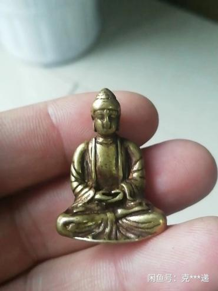

09磕大頭(73)
爲什麼要磕大頭(6)
歐米大
2024-03-05 21:45
師父您好，您在十年前就已四禪，爲什麼直到現在每天還要磕大頭700個？
Taiguanglin
歐米大：回家之後就不能一直保持在那種最高的狀態，因爲還得照顧母親。每天你看還得讀語音一兩個小時，然後還得照顧母親，還得出去活動、買菜，回來什麼家務事也得幹，所以不能長時間地打坐。還得幹活，做事的話需要能量，那就吃飯，吃飯又多多少少都會吃點什麼毒素之類的，所以還得磕頭，把這個毒素都排掉，儘量能保持好的狀態，在不能長期打坐的情況下也要保持一點好的狀態。
所以一般一個星期5~6天是磕頭的，等以後要是到了快死的時候，可能兩三年會衝刺般地修行，那個時候直接提上去。
何鵬飛1994
2024-03-29 12:26
Tai師父！1、對於《打坐前的準備》，磕大頭和跑步出汗，哪個更合適，可以相互替代嗎？
Taiguanglin
何鵬飛1994，磕大頭和跑步出汗哪個更合適？肯定是磕大頭是更合適的。磕大頭是有排毒功能，跑步比排毒功能稍微差一點。而且磕大頭可以讓身體骨骼都能歸位，傾斜的這個地方脊椎彎的都能回到原來位置，跑步這個效果就弱一點。雖然單練體能的話跑步也不差，但是你要想修行的話，還是往磕大頭方向走比較好一些。
Neo4,
20-06-2024
1、您好老師！平時磕頭時間比較緊張，請問可不可以用爬樓梯來代替？
Taiguanglin
不能。大磕頭有大磕頭的功效，尤其在意識層面上，讓自己的我慢心消失，敢於低頭，向別人表達恭敬，這都是修行的過程，爬樓梯沒有這樣的效果吧。
李磊
2024-7-16
2、之前問過Tai師，現在還是想問下，磕大頭這種，太師能不能幫忙想一下，有沒有好的一些佛道家的功法去平替？
Taiguanglin
還有拿什麼來替磕頭？慢跑可以，但也不是長久的辦法，因爲跑步和磕頭不是一樣的運動。你也可以去看道家的什麼八部金剛功，佛教的《易筋經》，那些也可以拿來練一練，甚至瑜伽也行。
但是都和單純的磕頭不一樣。這個磕頭把頭往下一低，這不光是身體的修復或者鍛鍊體能，還有滅身體的好動的習氣，還有就是滅貢高我慢心，有這個心理上的修行方面的效果。你練其他的可能就沒有這樣的效果，所以儘量是修磕頭。如果一開始不能做大磕頭的話，磕普通的小頭也行。
藍蓮花
2025-2-13
師父，磕小頭可以嗎？爲什麼一定要磕大頭？
Taiguanglin
藍蓮花，磕小頭可以嗎？爲什麼一定要磕大頭？因爲磕大頭比磕小頭對身體的幫助更大一些。你磕了大頭之後，再磕小頭就磕得不過癮。簡單來說就這樣。磕小頭的效果明顯不如磕大頭。所以一旦開始磕大頭，大部分人是不會回去磕小頭的，除非哪裡疼得不行了。
三顆橘
2025-3-12
老師，在我的眼中，你已經是站在山頂的人了，不是初學要開筋，爲啥每天還有磕大頭的習慣呢？
Taiguanglin
三顆橘，磕大頭，因爲我吃東西，正常的生活，身體就慢慢會變堵。所有人都這樣的，修行人也是如此，不是你打通一次就一直永遠通著的，你只要亂吃什麼的、不修行啊，它都會慢慢堵的。所以要想一直維持通的狀態，或者可以入定的狀態，你得每天堅持修行。
而且你的修爲越高，每天堅持修行的時間越長。長到一定程度也未必有進步，只能是原地踏步，所以還得不斷增加修行的時間。但是磕大頭的數量就不需要增加了，因爲磕大頭是爲了打坐而服務的。你只要能堅持打坐，打坐的時候舒服，這樣就可以了。
所以我現在是因爲，幾天不磕頭的話，打坐的時候感覺有點不那麼舒暢，所以就磕頭。
磕大頭的裝備(5)
墊子/護具/音樂(1)
芝麻2018
2024-08-14 20:04
給Tai師父磕個頭！
1、師父能邊聽您的音頻邊磕大頭嗎？
Taiguanglin
芝麻2018，能邊聽音頻邊磕大頭嗎？這個可以，我一直都是聽大悲咒，一邊跟著一起背一邊磕頭的，一直都是這樣，後來是改成唸佛聲，總之肯定是聽某一個咒或者唸佛聲來一邊跟著一起念，一邊跟著一邊磕頭的，我是這麼習慣性的。後來到了平時也是參思情的程度，就放個唸佛音，然後就一邊跟著唸佛，一邊能參思情就參思情，有時候都沒有情緒，就靜靜的聽那個聲音或者一起念。
對著佛像(4)
喝囉怛那哆囉夜
2024-03-07 09:03
頂禮師父：我在家裡磕大頭，可不可以在牆上掛一副佛像？該掛觀音的還是阿彌陀佛的呢？弟子叩謝！
Taiguanglin
喝囉怛那哆囉夜，掛阿彌陀佛還是掛觀音，隨便，要不你一起，你掛個西方三聖像，三個人都有的，觀音、大勢至，還有中間阿彌陀佛都有的，這樣就沒有什麼好糾結的，一下子都掛上。
DD泰粉絲
2024-03-17 17:06
1、大拜磕頭，前面沒有佛像，只在心裡唸佛號，能消業嗎？
Taiguanglin
DD泰粉絲，心裡念著佛號磕頭。也行，我是對這種形式化的東西並不在意的人。你只要堅持磕頭就已經比不磕頭的人強很多了。
李楠
2024-3-20
師父好：看了您的書和講法後，懂得了懺悔罪業的重要性。我開始念《地藏經》，磕大頭，練腹式呼吸，放生。想問在磕大頭的時候，頭腦中用觀想佛菩薩在自己面前嗎？同時心裡用想些什麼嗎？
Taiguanglin
李楠，磕頭的時候，我建議你在網上下一個大悲咒的音樂。有音樂對磕頭還是有幫助的，按照音樂的節奏來磕就可以了。
還有最好在前面放一個像，哪怕是小照片也行。實在不行，手機裡調一個佛菩薩的像，放到前面磕頭就行。找個佛菩薩的像，小的、大的都可以，小照片也行。放一下，然後再對著磕頭，我建議是這樣的。
喝囉怛那哆囉夜
2024-03-21 10:56
頂禮師父：您昨天說，磕大頭時最好對著佛像磕頭。我家裡正好有一尊小銅佛，請教2個問題：
1、小銅佛只有幾釐米高（如圖），這麼小，可以嗎？
2、我不知道這尊佛的名字，我磕頭的時候，心裡面應該思念哪一尊佛的名號？如來？觀音？彌勒佛？弟子叩謝！

Taiguanglin
喝囉怛那哆囉夜，這個可以，你拿這個小佛相放在前面，磕頭也可以。我建議是，你在網上下一個大悲咒的音頻、大悲咒音樂，中文版的大悲咒是有點節奏太慢了，我一直都是放梵語版的，只爲節奏稍微快點。然後磕頭的時候也跟著一起背梵語版的大悲咒，一起揹著磕頭就行了。磕頭的時候唸咒的話，你注意力不會太散亂，而且磕的感覺也是不那麼累，也不會像數數一樣，你要數數的話，感覺時間很漫長的，但是一起背咒的話時間很快就過去了。還有這尊佛的服飾上，是阿彌陀佛的服飾，釋迦牟尼佛是穿著袈裟的，阿彌陀佛並不是那種袈裟，前胸敞開的這種不是袈裟。
磕大頭的方法(29)
姿勢與數量(14)
阿難乎
14-02-2024
2.能雙盤2小時的人，每天對應磕頭多少個合適？
Taiguanglin
我到現在每天還是磕700個的。
我在樹下
2024-02-18 11:18
Tai師父吉祥。幫大家請教一個問題，關於磕大頭的正確姿勢示範。之前大家對磕大頭一些細節一直有爭議。有人因爲磕頭姿勢不對導致膝蓋受傷。師父是否可以認證一個標準的正確姿勢，提供給大家學習。
Taiguanglin
磕大頭的正確姿勢，在微信公眾號上有個視頻，有一位師兄——有點禿頂的大叔在那磕頭，磕得挺好的。主要是你磕頭時膝蓋一定要墊東西，不是往地上直接磕的，基本動作，你去看看他吧。
喝囉怛那哆囉夜
2024-03-04 15:41
師父：從去年12月以來，我一直按照您教授的“降魔坐+練呼吸+磕大頭+念大悲咒”的方法在修行，其中，每日磕大頭從第一次的50個到現在328個（50分鐘），雖然動作比較熟練了，但是空了還是在翻讀《坐禪之問答錄》對照檢查動作是否標準，發現對您說的“雙手撐住地面......然後雙手向前伸展，手掌向上翻，額頭著地”這句話的理解還沒有完全到位，請教如下。
1、“雙手撐住地面”：我發現，雙手撐住地面時，雙手落地的位置和胸腹砸下去的角度有關係，我是手掌根部的落點和胸部乳頭基本齊平，請問師父的落點在哪裡？雙手趴下的落點和雙手起身的落點（支撐點）是不是在同一個位置？
2、“雙手向前伸展，手掌向上翻，額頭著地”：
我的做法是，額頭隨著胸腹砸地的時候就著地了，在額頭著地的同時才提起雙手向前伸展。
我反覆參詳您這句話後的理解是：應該分解爲3個動作，而且這3個動作似乎應該有先後順序：先“雙手向前伸展”再“手掌向上翻”最後才“額頭著地”，這樣才會有個明顯的磕頭的動作。
請師父提示，我的做法錯了吧？我的理解是對的嗎？
3、“雙手向前伸展”的同時，雙腳背是不是也要打直？
叩謝師父指示！
Taiguanglin
喝囉怛那哆囉夜，這個磕頭的動作，你去看微信公眾號，用我名字寫的微信公眾號，那裡有一個視頻，有位老哥磕頭的。 （你說的）都很對、很正常。你不用在磕頭的問題上，刻意地去追求某個什麼標準動作，就按照你的方式來。磕著磕著慢慢習慣了這就可以了，沒有什麼特別副作用的話就可以了。
主要重要的是：一個頭一直要在上邊，頭不能往下，屁股不能撅起；還有起來的時候，膝蓋不要繃得太直。起來的時候膝蓋繃得太直，很容易傷到裡邊的軟骨，時間長了有可能傷到。所以膝蓋稍微彎曲一點，這就可以了。總體來說，就是不受傷的情況下，感受這個過程就可以。
春雨
2024-03-10 21:29
師父！我開始是拜藏傳大禮拜，看到您這邊的磕頭有所不同，請問兩種會是一樣的效果嗎？
Taiguanglin
春雨，大禮拜我是建議比較方便的，怎麼方便怎麼來。年輕的時候磕得快，所以就不舉手那些動作，趕緊磕就完了。你想要儀式感的話就慢慢磕。但是記住頭不能低於身體，屁股不能撅起來，肯定是要頭在上邊。膝蓋站起來的時候不要繃直，膝蓋稍微彎曲一點，這樣膝蓋不容易受傷。站起來的時候膝蓋繃直的話，時間長了磕得多，有可能會膝蓋軟骨受損。
李磊
2024-03-13
2、因爲住在宿舍，空間有限，而且磕頭的方式也比較怪異，想問下，磕頭這個有沒有什麼佛家、道家的功法來平替？
Taiguanglin
一開始初學就磕普通的頭，就上墳的時候給你家裡的長輩那些墳墓磕頭一樣，那樣磕也行，一開始就磕那個。然後覺得這個可以了，身體能承受了，那就磕大頭。還有一開始就50個開始，慢慢來不要磕太多，尤其是站起來時候膝蓋不要繃得太直，容易傷到膝蓋。
雲坤99
2024-04-16 02:35
師父好，陰虛適合大量磕頭嗎？聽了您講的法很激動。說幾句廢話，上次是觀音菩薩指引讓我遇到您，直接讓我戒了肉，修行有了方向。這次講的直接讓我信心堅固，對發心真的很有幫助，讓我對佛法的理解上到了一個新的層面。我很激動。感恩師父！
Taiguanglin
雲坤99，陰虛適合大量磕頭嗎？不要拿什麼陰虛或陽虛這種問題來看，而是你自己磕一段時間，每天堅持磕100個、200個，慢慢加量，看看自己的狀態，主要是看打坐時候的狀態。你磕到一定程度之後打坐越來越舒服了，磕100個、200個之後，發現打坐越來越舒服了，身體也越來越有勁了，精神頭也好了，那就正常。
如果過度了，反而打坐的時候很累，直不起腰，就是磕頭有點過了，不是拿陰虛、陽虛這個問題來理解。
老王
2024-11-11
Tai師父好， 您現在還是每天磕大頭七百嗎？ 請問磕頭怎麼計數呢。我磕頭到二百心裡就記不清了。
Taiguanglin
老王，還每天磕大頭七百嗎？我現在是每天磕七圈，但是不是天天都磕，一個星期磕五、六次，一個星期至少休一天。
怎麼計數？拿一百零八顆的佛珠來計數，拿在手裡磕一個數一下，拿佛珠來計數，這個需要...談不上是訓練吧，這個也不是什麼太大的本事。你只要拿在手裡磕頭的時候，一個一個數就可以了。
我不知道大家是怎麼數的啊，最好是拿佛珠數，這個是最方便的，佛珠也不要太大的，太大太長的不太好，中間不長不短的那種差不多。還能剛好數的手指要方便的，不需要手指太費力的，這樣就好了。
莫西
2024-11-12
師父好，磕頭的最後用胸口撞地面，經常性的這樣撞，會不會對身體有損傷？
Taiguanglin
莫西，用胸口撞地面，正常的撞不至於撞壞的，你要覺得真的很疼的話，那就適度的減少力度，正常的撞沒有什麼疼的。你有沒有看過那些練摔跤的人，他們有一個練習，就是狠狠的撞，把身體撞摔到地面上，從後邊撞，也有從前面摔的，就是讓身體適應這種震動，否則摔跤，現場真打的話是承受不了的，所以要平時練習，讓身體適應這種撞擊地面的震動。
我們練習就不是爲了練摔跤，但是對於內臟，身體是有幫助的，尤其是對消化，不知道你有沒有體驗，磕頭一段時間之後，你就會發現一磕頭的話通便，很順暢，如果連續三四天不磕頭，兩三天不磕頭的話，大便都不順暢了，所以一般一但開始磕頭的人，就可以說上癮，越磕越多，越磕越多，而且打坐要跟上，這樣的話身體越來越舒服。
定興
2024-12-11
師父好。請問師父大禮拜磕頭的時候，有什麼方法嗎，是觀想什麼，還是念什麼，還是什麼也不想。
Taiguanglin
定興，師父大禮拜磕頭的時候有什麼方法嗎？是觀想什麼，還是念什麼，還是什麼也不想？一般我是放大悲咒音樂的，然後心裡跟著一起念，這樣有音樂的話比較好，音樂有節奏感，磕頭的時候也得跟上節奏，這樣最容易的。然後跟著一起念大悲咒，心裡念也好，稍微出聲念也好，都可以，磕頭的時候畢竟是動的，因爲不是打坐的，所以也可以出聲念。
哆啦愛夢的百寶箱
2025-02-11 12:30
頂禮師父
1、大磕頭已經用了專用的墊子，腹部下去的一下子腹部會有些疼痛感。我有萎縮性胃炎，去年胃鏡做出來有一個小的病竈，一下子做完結束後胃部不舒服，能不能分多次少量做大磕頭。
Taiguanglin
哆啦愛夢的百寶箱，磕頭的問題，如果你覺得不舒服的話，也可以分幾次做，也可以減少數量，這個倒是沒什麼，就根據你的情況來做。但是主要是堅持，不要徹底放棄，放棄了就會倒退。
Tai賢心8055
2025-03-10 18:10
頂禮師父。
隨著打坐時間的延長問題也越來越多，又要勞累師父解答。
問題1、雖然雙盤熬腿疼能早晚各熬兩個小時，但是磕大頭只能兩百個，磕頭到兩百六十個的時候都撐不起來了，我很擔心磕頭少了跟打坐時間不匹配，是否影響通筋脈？ 我也想多磕頭，可是體力不支持，自己分析有三個原因：年齡大了的原因？日中一食能量不夠的原因？身體本來單瘦，改變飲食後體重下降了二十斤的原因？祈問師父有什麼辦法可以多磕頭？
Taiguanglin
Tai賢心8055，對於年紀大的人，我建議時間主要放在雙盤上。
磕頭是爲了給雙盤提供便利。你磕頭了，身體就舒展了、排毒了，打坐的時候舒服點，是爲了這個；不是爲了磕頭而磕頭，所以沒必要往這個方向努力。尤其是年紀大的人，你覺得舒服到哪個程度就好。而且你磕頭多了，消耗的氣多，打坐的時候腿更疼。
氣不通的那種疼，不是骨頭疼或者肉疼，氣不通就是從屁股後邊一直到大腿，氣虛的時候那種痛感會來的。所以磕頭也是適當的，不要磕到自己覺得氣消耗太多，打坐都疼的程度。
所以有些時候，隔一天磕頭，第二天不磕頭的那一天打坐就更舒服，因爲氣足了嘛。而且磕頭帶來的身體舒展的效果還沒有消失，但是連續三四天不磕頭又會開始不舒服了。所以如果你覺得有必要的話，就隔一天磕一次頭，這樣也可以。
我是建議天天磕頭，但是這個數量，就按照你打坐的時候舒服爲標準。磕到什麼程度，磕多了就會不舒服，那就減少一些。磕到剛好舒服，那就可以了。你覺得二百六十個撐不起來，那就二百個左右就可以了。以後再慢慢幾個月試著多加幾十個，這樣看看。
梅延明
2025-3-10
頂禮師父！請問在磕大頭時，最後一個收尾動作是從上身直立的跪姿站起來，但這個動作膝蓋需要承受的壓力比較大導致膝蓋疼。師父也講過可以腿彎曲。不知該怎樣彎曲才如理如法？另外能否省略這個起立動作？也就是直接從上身直立的跪姿開始進行下一個磕大頭的動作？感恩師父。
Taiguanglin
梅延明，磕大頭的問題，站起來是必須的，要不然就不算是完整的一個磕大頭了。你跪著的狀態下趴一下，再起來跪坐，然後再趴，這就不算是磕大頭了。
我們要的就是用大腿的力量撐起身體，這個在養生或者運動這些人那裡也知道，人的精力和大腿肌肉是有直接關聯的。
尤其是喜歡講這些內容的，就是說男性的精力，和大腿的肌肉是直接有關聯，甚至是男性荷爾蒙或者性荷爾蒙，和大腿的肌肉質量也有關聯。如果你年紀大了，大腿開始萎縮了，那精力就明顯開始下降。所以我們用大腿撐起身體，就是鍛鍊大腿肌肉，這個是有必要的。
至於膝蓋疼，如果你是胖子的話，可能身體壓得太厲害，就膝蓋會疼一些。但一般正常情況下，磕三五百個都不覺得膝蓋疼，正常的體型狀態下應該是這樣的。
如果是膝蓋從跪坐的姿勢直接站立，站得很直，這個有可能會對膝蓋的軟骨產生太大的壓迫感。所以稍微彎曲一下，起來的時候，膝蓋可以稍微彎曲的狀態下，再繼續往下磕，這就可以了。但是彎曲的程度也不能太大，太大了你就沒有站直嘛；咱們就站直的狀態稍微膝蓋不要繃得那麼直，向前面稍微彎，這樣就可以了。
恆河沙丫
2025-03-12 14:38
2、目前我最多的磕大頭是一千零八十個每天，打坐降魔坐可以熬到一百零五分鐘。有個問題：一天中，如果我同時打坐和磕大頭，磕大頭每次磕到兩百多就累得不行，打坐也熬不到這麼久，這是因爲我的氣血不足嗎？
Taiguanglin
下一個問題，你說的對，磕大頭，如果你的體能沒上來的話，磕完之後打坐就更累，第二天不磕頭的情況下，打坐就舒服一些。
因爲你在磕頭的時候消耗氣太多了，我們磕頭是爲了讓身體放鬆，打坐的時候更舒服。而不是在磕頭上把氣、能量或者體能全給消耗完了，然後再打坐，這就更累了。
練體能也有個過程，你說一天能磕一千個，但是磕兩百個就累得不行，說明你目前身體狀況不是很好。打坐的時候需要很多能量來修復身體，所以磕頭還是適當減少，不要一次磕太多，以打坐舒服爲基準。如果幾天不磕頭的話，打坐反而會越來越痛苦，所以還要磕頭，但是不是以磕頭的數量爲目的。
鍾錦
2025-5-12
感恩師父教誨，請問磕頭的具體方法，需要學習大禮拜磕長頭嗎？一邊磕頭一邊腹式呼吸，一邊念南無阿彌陀佛一邊打坐（打坐兩小時以上），對嗎？我是居士，零基礎，在看您悉心教導的《坐禪1》。
Taiguanglin
鍾錦，磕頭的具體方法，我記得在QQ視頻裡，有一位大叔，示範動作做得挺好的，你網上搜一下，好像叫“Tai式磕頭法”，反正有個Tai字。
按照《坐禪1》寫得已經很清楚了，你就那麼照著來就行。一邊磕頭一邊腹式呼吸，一邊念南無阿彌陀佛一邊打坐，這都是可以的。打坐兩個小時以上，一般初學坐不來的，零基礎那更不可能，所以磕頭很有必要，你就正常來就可以了。
不要給自己定下太高的目標，尤其是一年內要達到什麼境界，這個都不需要，有了這樣的目標，反而給自己增加更多的負擔。你就正常做，每天定個時間，我一天一定要修行兩個小時，打坐一個小時，磕頭一個小時這樣就可以了，初期能做到這個程度不錯了。
磕小頭(2)
唸佛方能消宿業
2024-02-20 17:46
4、磕頭一直磕小頭可以嗎？
Taiguanglin
“磕頭一直磕小頭可以嗎？”這個我怎麼知道啊？你願意磕就磕，不願意磕就別磕，你願意磕大頭就磕大頭。我也是從磕小頭開始的，但是，我慢慢覺得這個磕小頭不夠爽，對身體的健康影響沒有磕大頭好，所以，我就改磕大頭，你根據你的情況來斷定吧！
逍遙夢見滄海
2024-05-10 20:39
可以在平地上磕小頭嗎，這樣頭低於身體，副作用大嗎？
Taiguanglin
逍遙夢見滄海，磕小頭沒有問題的。磕小頭的時候頭低於身體的時間非常短，時間長的話那肯定姿勢不對。磕小頭也一樣，趴下去的時候屁股不能撅起，要貼到自己的腳後跟上，胸口要貼到自己的膝蓋上，這樣整個人疊成三摞了，小腿、大腿和上身整個軀幹疊成三摞，這樣頭才能正常貼到地上。這個是合格的、標準的磕小頭的做法。
其實很多人都不會磕小頭，都撅著屁股磕的。而且去寺院的話，上面有個很高的墊子，方便人上去磕頭，磕三個頭就走。那種墊子不是用來練功的，磕小頭是在平地上磕的。所以儘量做到我說的屁股貼到腳後跟上，胸口貼到膝蓋上，然後頭著地，這樣才算是比較正常的姿勢。這樣的姿勢是沒有什麼頭低於身體的副作用的。
吉時忌時/空調(8)
果慧
2024-03-06 16:53
2、磕大頭出汗是排毒，每月來月經7天時間不能磕頭感覺浪費時間，夏天炎熱，走路特別容易出汗，所以我可以在來月經期間散步來出汗，這種出汗是排毒嗎？另外多吃排毒食物蔬菜（雖然沒有出汗）但是應該對排毒有一定作用吧？
Taiguanglin
然後磕大頭排汗，月經天就不要磕大頭了。正常吃的蔬菜水果，多多少少都是有點毒素的，這個沒辦法，也需要出汗，我也是，所以還是堅持磕頭出汗的。
偶米大
2024-03-26 18:04
2、磕大頭出很多汗，但在冬天，（冬至-立春）期間，按照中醫理論，冬天主藏，不宜出大汗的運動，所以，在冬天期間，是否減少到身體微微出汗即可？請師父開示。
Taiguanglin
“冬天要不要減少量”，這個你隨意，根據你的身體情況來做吧。我個人是基本沒什麼變化的，冬天夏天都做，可能我對身體就不是很在意的關係吧。
Winnie
20-06-2024
磕大頭是連續磕三百個好還是可以上午下午分開各一百五十左右？感覺磕到半個小時就比較累了。
Taiguanglin
應該連續磕三百個，還是上午下午分開磕？這就看你家裡的條件了，如果你隨時都可以磕頭那倒好，如果需要上班，沒有時間和地方磕，那沒有辦法，最好是晚上一口氣磕三百個。但是我建議每天專注磕幾百個之後，其它時間就專注地修行或者做其他事務。
Neo4,
20-06-2024
2、什麼時候磕頭比較好呢？早起後磕？飯後多久後磕？
Taiguanglin
我個人認爲是傍晚。早晨身體也靜，心也靜，最好打坐，這是最好的時間段。磕頭是晚上，晚飯那個時間點磕就可以。
容
21-06-2024
2、還有關於大禮拜，天氣太熱，不開空調根本沒法做，只要不對冷風處，應該還好吧？
Taiguanglin
還有大禮拜天氣太熱，可以開空調磕頭，但是不要讓風直接吹到自己身上。
先拜眾生再拜佛
15-07-2024
最近天氣異常酷熱，磕大頭有時開空調，就比較不累，一樣的時間可以磕更多個。有時候又覺得熱就忍忍，不開空調，流汗當作排毒，但體力消耗實在快。想問師父，如果開空調可以磕到七百個，但不開空調只能磕到五百個，建議開空調或者不開？不開空調流汗比較多，是否排毒效果更好？
Taiguanglin
先拜眾生再拜佛，要不要開空調，要不要磕五百個還是七百個？這個你隨意，這個不重要。我個人認爲不開空調磕五百個也就夠了，還是以自然環境爲主，儘量少依賴這些科技。空調空氣轉過來之後，裡邊也有一些灰塵之類的，比自然空氣不太好，我個人這麼覺得。除非你把裡邊洗得乾乾淨淨，再放點什麼消毒藥水之類的，但是這個也有影響，所以還是不開空調最好。磕五百個就五百個唄，沒必要非要強迫自己磕那麼多。
陳藝平
2024-11-12
師父！中醫上說晚上爲陰，不宜劇烈運動，要不然會損耗陽氣，那長期晚上磕大頭，會對身體造成負面的影響嗎，頂禮！
Taiguanglin
陳藝平，晚上磕大頭對身體有負面影響嗎？很多人對身體實在是放不下，一直在問身體，身體怎麼樣，你自己試一下就知道了，你晚上磕長頭然後感受一下，每天堅持晚上磕長頭，堅持一個星期兩個星期，看看你白天的狀態，人的整個身體的狀態、意識層面的狀態，如果好的話那就是好，如果不好的話就改一下時間。根據你來定，不要什麼中醫上的那種說法，就看你自己。
按理說的確白天是人身體活躍的時候，晚上要靜下來，但是很多人沒有條件，白天運動，晚上正常睡覺，沒有這麼好的條件，白天還要上班，哪有時間磕頭，有些人凌晨磕頭，人家也肯做，那就不錯了。
很多人都是晚上回來之後磕個頭打打坐，這已經很不錯了，能做到就已經不錯了。所以不要糾結於這個問題，對身體有沒有影響，你要是這樣糾結的話，什麼事都做不了，吃飯吃多了也會死的，而且飯也沒有那麼多的營養，水喝多了也有可能嗆死的，是吧。
任何事情都有個限度，所以根據你的狀況來定，你先晚上磕一段時間看看，覺得對身體有幫助，很好，那就繼續，如果覺得對身體沒有幫助，感覺越來越累，身體越來越痛，那就算了，好吧。
貼吧匿名1966
2025-05-16 22:11
Tai師父好
問題一、 目前二十一歲，時間很多，不需要打工。但是我作息顛倒，能不能拿凌晨時間一到五點磕頭，白天我沒什麼精神主要。
Taiguanglin
貼吧匿名1966，晚上磕頭行不行？正常人都是晚上該休息的時候休息，黑白顛倒，對人體不是很好。你說你體質特殊，我不知道你是經過醫院鑑定之後說你特殊，還是怎麼特殊，反正你樂意就可以。
我想說的是，你二十一歲可以通宵玩，我二十一歲的時候也通宵玩過，第二天正常，也沒啥大不了，但是等你三、四十歲，年紀越大，通宵一天可能後邊兩三天都提不起精神，所以人還是要正常的遵守作息規律是比較好的。
所以晚上十一點之後睡覺，至少到第二天三點、四點。一般寺院也是十一點到三點，這四個小時睡覺的。如果是一直打坐的人，那還是可以的，晚上也可以打坐，但不是的話最好該睡覺就睡覺。但是我說了，你聽不聽是你的事兒。你覺得凌晨磕頭好，那就磕吧。
老人/小孩/病人練習(5)
芝麻2018
2024-03-08 09:56
頂禮師父！小男孩，馬上七週歲了，我讓他每天磕大頭108個，沒什麼不好吧？我怕他累著，不過他磕的不標準，可能也不太累，不怎麼出汗！
Taiguanglin
芝麻2018，一個7歲的小孩，你這算是虐待他嗎？每天讓他磕108個頭……7歲應該上小學吧？你要是跟他一起做，帶著他一起做，這也算是親子互動吧，但是（如果）你像個老師一樣在旁邊拿著棍子看著讓他磕頭，這個我覺得有點對孩子來說不是很好，反正他願意磕就可以。但是如果是他不想幹的事，你既然讓他幹了，應該有點獎勵吧。還有儘量不要做到傷身體的程度，差不多就可以了。
lucky^-^
2024-3-18
師父好，1、替老媽問的，老媽六十多歲了，說是隻要一睡覺人就跑出去了，夢多，有高血壓，人比較肥胖，可以練習大磕頭嗎？老媽信仰基督。
Taiguanglin
Lucky，母親信基督教，應該是按基督教的方法來解決這些問題吧，他們有他們的辦法，念《聖經》什麼的，如果你是強行讓她幹別的，估計和你得幹起來，尤其是基督信仰很很虔誠的人是不會輕易改變的。所以你不要試圖去改變她。
磕大頭這種事情，年紀太大的人光是少吃就行，你晚上少吃也能減肥，磕大頭還是緩一緩，先看看你能不能和你母親溝通得下來，估計她不好說話。
容
20-06-2024
感恩師父！
1、關於大禮拜：目前身體狀況不好，氣血虧虛，適合繼續大禮拜嗎？
Taiguanglin
氣血虧虛，你吃的不好還是呼吸方面不好？先把飲食和呼吸調好，呼吸是腹式呼吸，飲食就不要吃肉，少吃主食，多吃蔬菜水果，這樣調好之後，再大禮拜就行。
大禮拜也算是一種修行，你得做到每次磕完頭第二天變得更精力充沛，這樣的話你修的是對的。如果磕完很萎靡，沒有力氣，很疲勞，第二天也是這樣的話，說明你目前的身體還不適合這麼多的大禮拜，可以從五十個開始慢慢練起，一點一點練，身體覺得舒服的時候再增加一些，這樣就可以了。
Celia·左
2024-9-14
1、頂禮師父！我今年五十一歲了才剛剛接觸佛法，幸運的是剛開始對佛法有親近之心就偶然地遇到了《坐禪問答錄》。現在按照師父的教導每天讀《地藏經》，大悲咒，爲雙盤做準備，雖然時有怠惰，但也算堅持下來了。比較殊勝的是從原來一天不吃肉都難受到現在三十六天沒吃肉了，並且覺得自己還可以繼續下去（發願斷肉之前我曾一再祈請菩薩加持）。我現在有兩個疑問，一個是我身體弱，原來是通過經常健步走和瑜伽等方式鍛鍊，現在特別希望按照師父教導通過磕大頭的方式消業、鍛鍊，但是很難堅持下去，有時候是真的氣弱，有時候就是怎麼都不想做，是不是業障太重的原因？
Taiguanglin
Celia·左，你五十一歲磕大頭，你沒有雙盤的情況下，五十一歲磕大頭就不要磕太多，一兩百個就可以了，一天堅持一兩百個，也就半個小時多一點的時間。一百個磕的快的話十五分鐘以內能磕完，磕的慢的話可能二十分鐘，那兩百個就是兩圈的話三四十分鐘，至少要磕到三十分鐘，因爲三十分鐘會出汗的。
一般磕的快的話磕一圈都不怎麼出汗，到第二圈會出汗，出了汗對身體有好處的，這個就不重複說了。你也別想著什麼業障太重這些，你這麼想反而就變成更大的障礙。一開始都那樣，想磕頭吧，真的是憋了很長時間，好不容易起來去磕，人人都有這麼個過程，所以不用太過多的自責，懈怠也是大部分人的普遍的心理。
換一種說法你沒有那種迫切感，就是求法或者修行方面沒有那麼迫切。再往前看就是你現在過得還行，你沒有那麼多痛苦或者生活上還有人生，還有周圍的人際關係，還有錢，各方面都沒有那麼的痛苦，所以就沒有那麼的迫切的想改變的慾望，所以就會懈怠。這個只能是慢慢來，不要著急，慢慢來，五十一歲還有很多時間的。
玄蔘
2025-1-18
頂禮Tai師父！
1、我的腿有靜脈曲張，之前腿腫發炎了去檢查發現裡面有血栓，醫生讓我不要劇烈運動，怕血栓跑到肺裡成肺栓塞，我就靜養了好幾個月，現在複查血栓還存在只是比之前小些了，但我又很想磕大頭，請問師父有靜脈血栓可以磕大頭嗎？
Taiguanglin
玄蔘，有靜脈曲張，又想磕大頭怎麼辦？理論上是可以磕的。首先所有的修行都是在佛菩薩的加持下修行，你不要把這個當做一種養生的運動來看，而是修行。所以在佛菩薩的加持下做，你要先有依止於佛菩薩的心態，然後向你的冤親債主們、你累世的有緣的眾生，該懺悔的懺悔，然後做功德，迴向給他們，然後求佛菩薩加持，然後再做。但是如果你怕的話，就先從慢步開始。
還有靜脈曲張，主要是你的血液，一個是粘稠度，還有就是你的呼吸不好，肚子太收緊了，堵了背後的血管，所以靜脈血液上來很困難導致的。還有那些售貨員什麼的，長時間的站著，尤其是身體胖的人，還長時間站著工作的話，很容易得這種病。
所以你還是應該先把腹式呼吸練好，然後不要吃那些讓血液變粘稠的東西，肉、主食儘量少吃，吃的多的應該是蔬菜水果最好，主食儘量少吃，主食也會讓血液變得粘稠的，儘量少吃油，肉就不要吃了，你既然學佛就不要吃肉了。
身體的反應(24)
胸口不適/流涕/出汗(11)
逐月A
2025-05-15 17:12
2、我最近磕大頭，才磕幾十個時候就出現全身熱得和火爐一樣，全身發燙的情況，是血液循環加快了嗎？
Taiguanglin
下一個問題，最近磕大頭，渾身發燙，這種現象很正常，運動了肯定會發熱，不發熱才怪。
福慧華
19-06-2024
請問師父，早上磕頭的時候總是流清鼻涕，如何解決才好，謝謝師父！
Taiguanglin
福慧華，流鼻涕以前也講過了，修行到一定程度，也是身體開始修復的一種表現。
流鼻涕挺好的，能把裡邊不好的東西、不乾淨的東西給推出來。有時候也有一段時間會咳很多痰，支氣管和肺裡堆的那些不好的東西也會排出來，這些都是好事。你不用管，流鼻涕擦一擦繼續磕就可以了，只要不影響到正常生活的程度，繼續堅持就行。
Winnie
20-06-2024
Tai師父好。請問我磕大頭的時候很容易吐那種粘稠的泡沫痰，這是什麼原因？自從新冠後感覺脾胃功能差了很多，之前還會打嗝，以前從來不咳嗽，去年跟今年還咳嗽肺炎了。
Taiguanglin
Winnie，磕大頭的時候吐痰是很正常的現象，我建議磕大頭把身體往地上拍，震動內臟，也可以震動肺，肺裡那些不好的東西都會被震下來，用痰的方式咳出來，所以這個就不用管了，過一段時間身體調好了自然就會消失。
海蓮
2024-7-16
頂禮師父！ 做大禮拜可以消業，所以我每天都做，但是現在天氣那麼熱隨便做個一百多個都全身溼漉漉的，衣服褲子全溼。有些時候想多做一兩百個，但每次做完後感覺身體很累很虛弱，一天都沒有精神，想問下師父，站在中醫的角度來講出那麼多汗會不會對身體不好？
Taiguanglin
海蓮，出汗本身，沒有對身體有很不好的事兒。可以喝水再補回來，尤其是喝果汁、蔬菜汁這些來補，反而更好。
你看那些運動員，練健美操那些人，參加比賽之前，爲了讓體重達標，在短時間內會驟然出汗。用泡桑拿的方式，就在一個三十幾度，很熱的那種房間裡，一待好幾個小時，拼命出汗。但是人家也正常參加比賽啊。所以說這個事對人來說是有一定影響，但是可以後邊再修行補回來。
至於磕頭嘛，量力而爲啊。如果覺得磕完之後身體不是很清爽了，而是變得更累了，那說明你現在體能還不夠。慢慢來，那就先磕一百個唄，以後再加唄。
李磊
2024-8-16
Tai師您好，我最近才開始練習大磕頭，每天晚上八點多練習，先從每天一百零八個開始，想問兩個問題：
1、每次大磕頭後，人會很清爽，感覺氣色也明顯變好。但是每次都是渾身溼透，有中醫有說法是大汗傷陰，不知道Tai師您對這個是怎麼看？
Taiguanglin
李磊，理論是理論，身體是身體，而且你的身體是你的身體，以你的身體的標準來判斷，我不說什麼大汗傷陰這句話錯了或者對了，而是你的身體，你大磕頭後人變得清爽，氣色也好了，精力也充沛了，那就是你修的對了，這個你再找中醫解釋的話，肯定有解釋的方法，往好的方向解釋的。
大汗傷陰是怎麼說，算斷章取義吧，前面什麼條件，後面怎麼樣，這個都沒提就是大汗傷陰，只要出汗傷陰，那每天工地裡幹活的，夏天還在堅持幹活的那些建築工人是不是傷陰到沒陰了，陰都沒有了是吧？是不是這樣？他們每天都在暴曬之下出大汗了，他們還能活嗎？
呆瓜
2024-9-10
2、磕頭出汗和天熱出汗的排毒效果一樣嗎？
Taiguanglin
磕頭出汗和天熱出汗的排毒效果一樣嗎？不一樣。磕頭才能真正排毒，天熱出汗，排毒你說完全沒有，這個不好說，可能多多少少有點吧。但是不像磕頭那樣，磕頭是全身全部的動，所有機體，尤其是心肺在強化功能情況下，血液循環加速了。整個心和肺，更高效率的運作的情況下，整個身體都在加速，新陳代謝都在加速。
而你說的天熱出汗，那是一種防禦機制，只是調用了身體的一部分防禦機制而已，並不是全身都在調用，更沒有調用到心和肺上，你正常磕頭的時候，心肺要更有效率的工作，心臟要跳得更快，肺要更多的吸收氧氣，但是它對你這個身體來說，並不是負擔，而是一種訓練過程。但是呢，天熱的過程讓你心跳加速、血壓升高的話，那是防禦機制還不能達到好的效果的情況下這樣的，是不好的病態。
身體健康的人，在天熱的時候更有能力扛得住吧，反正承受的能力更高。但是身體不好的人，他扛不住天熱，就是因爲他整個排汗這個過程，是防禦機制，而不是訓練自己的，你得理解這一點。
張韻瑤
2024-11-11
Tai師父好。
第一個問題:我現在開始吃素了，也聽您的話，開始練習腹式呼吸，磕大頭，剛磕了兩天，左側鎖骨下方就疼痛，咳嗽都疼，被迫停止磕頭修養，這屬於消業嗎？
Taiguanglin
下一個問題，張韻瑤，你說磕頭左側鎖骨下方疼痛，一開始磕都那樣，因爲這個會拉扯到以前不怎麼用的肌肉或者神經，所以多多少少都有痛的，堅持一段時間就過去了。
如果很疼的話休一下，然後少磕點，在你能承受的範圍內慢慢磕，不要急著一次磕很多，一開始磕三十個五十個，這樣慢慢增加就可以了。一般人你想磕五百個，那沒個一年或者至少半年時間，慢慢增加才行，一下子來很多個不太好。
恆河沙丫
2025-1-13
2、師父，我每天兩個小時的磕大頭剛開始五百個，現在可以八百個，持續了大半個月了，先是放很多屁，後來空咳無痰，現在咳嗽有白痰，咳嗽持續有半個月了，這種情況是正常排肺部毒素嗎？是否需要暫停，還是繼續磕大頭？同時臉上出了小痘痘，集中在嘴一週，這也是磕大頭的原因嗎？
Taiguanglin
第二個問題，你說的這些症狀都是很正常的症狀，磕到一定程度多多少少都會有變化的，就是把不好的東西會集中爆發出來，然後就過去了，就沒事了。控制好飲食，然後堅持磕頭就可以了，只要沒有影響到你的正常生活的話就可以堅持。
恆河沙丫
2025-1-13
3、我每天必須喝水，如果不喝水或者少喝水，第二天就會有尿急尿頻的現象，補充水了就會好，這種現象有幾年了，應該是膀胱的問題吧？ 這個小問題磕大頭可以修復嗎？
Taiguanglin
第三個問題，每個人每天都得喝水，沒有不喝水的人，只不過是多少的差距而已。你說的尿頻尿急，應該是腎氣不足，就是腎不太好。你光磕頭，雖然是有一定的幫助，讓身體有本質上的變化。但是你想讓腎氣足的話還得靜功，就是打坐，打坐能堅持到兩個小時的話，基本這些問題都會解決掉的，沒什麼大問題，繼續努力就可以了。
梵摩尼
2025-1-15
頂禮師父！磕大頭的時候呼吸困難，體力很好，跟得上，就是有點上不來氣，怎麼調節？
Taiguanglin
梵摩尼，磕大頭的時候呼吸困難，體力很好，跟得上，就是有點兒上不來氣怎麼調節？上不來氣就多練呼吸，還有找個空氣好的地方，要通風。練呼吸是專門需要練的。
《坐禪1》裡講過，要專門拿出時間，最好是站著練，先把腹式呼吸練好。磕大頭的時候，一般一開始都這樣，磕的快的話，有點喘不過氣，這很正常。等你慢慢練好了，先把腹式呼吸練好，磕大頭這點速度上的運動量還是完全能消化得來的，年紀大的人也能做得到的。
恆河沙丫
2025-02-12 18:49
第二、自從磕大頭以來，感覺有點氣短，經常打嗝，之前呼吸已經練的還不錯，這是什麼原因？ 是因爲我磕大頭時呼吸沒有對嗎？ 磕頭時並沒有刻意練習呼吸？
Taiguanglin
下一個問題，自從磕大頭以來感覺有點氣短，經常打嗝……，這都是正常現象，肯定有所變化的。有可能一開始身體有點不舒服，但是磕過了之後，身體就明顯變好了。所以堅持磕頭就對了，還有磕頭時，不要刻意練習呼吸，我希望你先把呼吸練好，平時就練好。
當然磕頭和呼吸是可以並行的；不是一邊磕頭一邊練呼吸，而是分著練，磕頭就磕頭，但是儘量把練呼吸變成生活常態。等你的呼吸方式徹底改變過來之後就好了。
頭痛/血衝頂/血壓低/失眠(3)
三日空
2024-03-02 18:50
2、我磕大頭的時候頭特別痛，像炸裂一樣的痛，磕完了要過五分鐘才能歇過來。我動作都儘量按照師父您說的做，讓頭部始終比軀幹和屁股高，我也沒有高血壓糖尿病之類的病，這種頭痛是啥原因啊？
Taiguanglin
磕大頭頭痛，你是腹部沒有徹底打開，還是怎麼樣？你練腹式呼吸嗎？你先把腹部撐開，讓血液更多地進入腹部。磕頭的時候也要腹式呼吸，磕頭的時候你要長時間做到用腹式呼吸的，你不能用胸呼吸。如果你一直用胸呼吸，腹部也沒有打開的話，可能磕頭的時候心跳加快，腦袋就充血了，就有點頭疼。
過一會你就能歇回來，說明平復下來，心跳放緩之後，血液就下來了。不是什麼病的問題，而是肌肉過於緊張，腹部沒打開的問題。先好好練腹式呼吸。
心梅
2024-4-25
Tai師父，請問已經拜了一百多萬大頭了，去年禮拜時關節會出現咔咔聲，然後血壓非常低，低壓42，高壓76，這樣正常嗎？平時沒有好好打坐。拜懺、誦經佔了大部分時間。
Taiguanglin
心梅，你拜了100多萬個大頭，這是多長時間內拜的？還有血壓太低，磕頭和打坐是要一起來的，磕頭如果超過一定數量，膝蓋什麼的骨關節會有點受損，需要打坐兩個小時左右，讓受損的部分全部恢復過來。所以這兩個是要並進的，不能光拼命磕頭。
所以不打坐的情況下，血壓非常低的問題一直解決不了，這隻要不影響你的生活可以緩一緩，不用刻意地想讓血壓快速地升高，這樣反而更不好。有些人天生血壓就處在那個階段，高了反而不好。
本性自足
2025-02-10 12:10
頂禮Tai師，您好我有個問題：就是我磕大頭的當天晚上睡不著覺是爲啥？翻過來轉去過也睡不著，是有障礙嗎？讓我不磕頭？麻煩您了。
Taiguanglin
本性自足，磕頭之後睡不著，我也有過這個情況，因爲我本來就睡眠少，磕頭之後就狀態更好，那就坐著打坐就可以了，沒必要強迫自己一定要睡覺。你可以打坐，可以心裡唸佛。但是一般凌晨的時候，你這樣磕頭導致睡不著的，一般到凌晨還是會睡著的。可能一天睡的時間稍微短一點而已，也沒什麼大不了的。
皮疹/四肢痛/響/腰腹(10)
簡爲上乘
2024-02-16 22:55
感恩師父出山傳法，懶散的狀態重新振奮了！自己立志沒有到位，行動也就沒有持續到位誒。慚愧！祈請師父慈悲加持弟子精進！
2015年底懷老二時遇到一位陌生女眾師父說素食，馬上就執行。後來夢見一位出家人來入胎，素食到現在7年啦！
斷淫5年！感謝和前夫緣淺，他不糾纏之恩，感謝自己沒有男女情債。
看到師父書裡說的素食和斷淫時間對修行的階段性影響，師父說10年一個境界，體會到個人19歲，29歲，39歲的人生轉折和認知變化！
現在39歲啦，年前10月.11月 12月按Tai式磕頭練習了2個多月，發現手腕和腰疼（躺著有時候感覺後腰的位置空，有風是生完2個兒子後開始吧）加劇，是姿勢不對嗎？
頂禮師父！
真期待可以面見師父接受師父的指點啊！
Taiguanglin
簡爲上乘，女性，已經生過孩子的女性，我建議是從正常的磕頭開始，普通的磕頭，不要直接一上來就大磕頭。先慢慢來，看看能承受的話再稍微加點，就從正常的磕頭，這個正常的磕頭大部分主要是練，就看膝蓋不疼，就可以磕的，大磕頭還是慢慢來，還有就是用打坐來恢復身體，這個很重要，你不要一個勁的磕頭，而不打坐。
雲捲雲舒
2024-3-22
磕頭膝蓋作響，後來手臂關節也響。這種現象多久才能緩解？ 現有條件：
①腹式呼吸還沒練成，雙盤90~100分鐘；
②磕頭已經有一年多了，每次3000~540個；
③膝蓋沒有受傷經歷，磕頭墊子也很安全。
Taiguanglin
雲捲雲舒，一開始磕頭都那樣，一開始可能渾身哪都疼，關節也會響。但你每次3000~540個是什麼磕頭，你是寫錯了，300到540，還是3000？正常人一天磕不了3000個的。磕大頭一個小時最多400個，你要磕3000個，得多長時間？七個小時，八個小時嗎？雖然普通的小磕頭，有人磕一萬個，一天連續磕20個小時，磕一萬個的人有，但是我不覺得你是這樣的瘋子吧。
千予千尋
2024-3-26
師父，您好，我是22年3月份左右偶爾刷到有關《坐禪》的內容的，後來就向師兄請了這二本書，就跟著書裡磕頭，讀《地藏經》了，到目前爲止大拜做了有7萬個了，《地藏經》讀了有850部了。吃素也有2年了。現在遇到的麻煩有3個。
1、現在天氣熱了，磕頭後身體很熱，臉發熱發燙，然後發癢，發出很多的紅色丘疹，像夏天的痱子一樣的疙瘩，又紅又癢，臉還會腫起來，去年夏天就發過一次，後來去醫院打了一枚地塞米松小針才壓下來的，醫生說是運動後導致臉部毛細血管過度擴張，是玫瑰痤瘡，讓我不要過量運動，否則會復發，所以我把大拜量減少了，原來是每天400個的，後來就做200個了。可現在我每天只做108個了，大前天很熱，做了後又復發了，難道我不能做大拜了嗎？師父，我真的不想放棄磕頭呀！
2、我痔瘡老是脫出，平時站立10分鐘左右就會痔核脫出，能塞回，無出血，也吃了大半年的中藥調理不見效，所以練呼吸我都是坐著練的，還有做大拜時也有練習提肛的。
3、我膝蓋一直有不舒服的，夏天也要帶護膝的，一冷就會疼，現在是坐沙發久了膝蓋也會疼。 謝謝師父，自從遇見《坐禪》，我真的是變化很大，現在每天發願生出慈悲心，菩提心，平等普化心，一心一意修行，往生西方極樂世界，學成歸來能再來娑婆世界度眾生！
Taiguanglin
千予千尋。你的這個問題就是呼吸沒練好，腹肌沒打開，所以血液往頭上流，臉部發脹，還有痔瘡，這些都是腹式呼吸沒練好。那你專門練腹式呼吸，你把它練成自然習慣，平時也是腹式呼吸的程度，這樣才行。不是打坐的時候腹式呼吸，平時也要自然而然地做，把本來的胸呼吸全部轉換成腹式呼吸，這樣才算是練成了。
所以我勸你現在是磕頭也好，打坐也好，稍微悠著點，你先把呼吸練好，平時站著練躺著練都可以，你一想起來就練，先把呼吸練好。
還有膝蓋問題，這也是因爲你呼吸沒練好，後腰的血管有點堵了，所以下肢血液流動不太好，所以膝蓋就有點涼。打坐的時候，我也是肯定拿毯子蓋著膝蓋的，夏天就不需要，但是天氣冷了那就蓋一下，這個很正常。“夏天也要帶護膝的，一冷就會疼“，先把腹式呼吸練好，這樣就可以了。
喜之郎
17-06-2024
師父吉祥，剛開始大禮拜，每日能磕108個，磕頭後精神會比之前好，臉色也好轉了，胳膊和腿疼得厲害，明顯不是正常那種疼，好像是有種障礙一樣，現在感覺體力還可以，出現這情況是不是堅持下去就好？
Taiguanglin
喜之郎，你說的這種狀態，“明顯不是正常的痛，感覺障礙”，如果我是你的話，我會增加數量，反正我一開始五十個，每天增加一點，很快就加到了七八百個，就是磕到有點累的程度。如果你年紀大，可能很快就累，但是一般情況下，年輕人體能上來之後磕五百個以上沒什麼問題的。
夜盡天明
22-06-2024
頂禮師父 ！請問師父，一天磕大頭三百左右。有時走路或者上樓梯時，偶爾雙膝關節突然一彎，向下猛的抖動一下，但馬上又好了，這正常嗎？是不是繼續磕過去就好了？感恩師父！
Taiguanglin
夜盡天明，除了這個小問題之外，看看整體身體狀況還有意識的變化，是變好了還是不好。是磕了三百個頭之後全身都痛，第二天都起不來了，還是身體越磕越健康，精力越來越充沛，腦子越來越清爽。
你要是變好的話繼續磕就可以了，如果全是壞的變化，還是減少數量吧，或者病了就去醫院看醫生。
Susan
2024-7-17
師父，每次磕頭時左膝蓋會不舒服，瑜伽墊上左膝蓋下去的地方有個小窩窩了 ，膝蓋彎著，用手按摩膝蓋也會不舒服，要怎麼修復左膝蓋呀？
Taiguanglin
Susan，膝蓋，這種骨頭的毛病只能是用打坐雙盤來修的，一般你能堅持兩個小時的，基本就可以修復好了。
還有如果受傷了，你覺得太疼，最好還是收斂一點，不要拼命的磕。雖然有些人是用這種方法來硬磕過去的，有些人也可以做到，但是我不建議這種過分過激的方法，但是前提是你得先向佛菩薩求，希望他們能夠加持你，然後再磕頭，儘量在自己能堅持的範圍內做，還有雙盤兩個小時往這個方向努力，更保險一點。
Susan降魔坐應該是，修復左腿應該是降魔坐，先把先把右腳放上去，然後再把左腳放上去，用這個方法，儘量堅持，你得兩個小時以上才可以修復軟骨什麼骨頭的毛病，之前還是有點難度的。
鏈接愛
2024-8-13
頂禮師父，
1、以前很少運動到手，手沒什麼力氣，磕大頭後手腕疼，其他地方都還好，現在半小時後就開始疼，這是什麼毛病？怎麼辦？
Taiguanglin
鏈接愛，磕頭時手腕疼，那就要用打坐來修復。一般你打坐能堅持一個小時的話，各種小毛病都會自己改過來，你想要修的更徹底的話，至少也得雙盤兩個小時，這樣的話大概大部分身體上的一些障礙都能調回來。所以我建議你這個手腕疼的問題，你就每天堅持打坐就行，至少坐兩座，早晨一座，晚上一座，每次都坐到你堅持不下去的程度就行。
上天安排的最大
2024-8-16
祈請師父慈悲開示。最近身體關節活動時老聽到咔的一聲，手腕，腳腕，髖關節，手臂等處。手腕轉一下咔的一聲，下樓時腳腕會咔的一聲，坐沙發上側個身髖關節那個大轉子咔的一聲，用手摸下頭手臂還是那裡關節咔的一聲。有時只要活動就咔一聲，一聲過後就不咔了，身體沒什麼不適，磕頭，打坐一點不影響，感覺身體比以前柔軟了些。請問師父這是怎麼回事，正常嗎，是什麼原因引起的呢。
Taiguanglin
上天安排的最大，關節出聲音，這個也很正常，一開始剛磕頭的時候都那樣，膝蓋會出聲的，每次下蹲的時候都會有聲音，一開始都那樣，但是堅持一段時間後自己會消失，這也是修行到一定境界之後膝關節處的摩擦都會潤滑，之後它就沒有聲音了。
還有受力也有問題，因爲每個關節受力點都不一樣，受力點錯誤的時候它容易出聲音，但是你把身體都調節好了，身體動作很協調的時候，它就不出聲音。還有中醫上說的就是溼氣，身體有溼的話也會出聲音，所以多磕頭多排汗更容易恢復。
海蓮
2024-9-13
2、目前我每天做三百個大禮拜，最近感覺膝關節有點痛不舒服，做的時候我的膝蓋底下也有墊小枕頭，但還是痛，我該怎麼做才能把膝蓋修復好？
Taiguanglin
一天做三百個大禮拜，然後膝蓋疼，如果是疼的越來越累積的話，那就減少數量，別那麼硬撐著。還有醫生說不讓雙盤，你可以試著靠牆坐雙盤，單盤是不行的，單盤肯定是改變不了這個脊椎問題，只能靠雙盤。
還有，最直接簡單的方法就是做功德，求佛菩薩幫你修復身體，這個是最好、最快的方法，只要人家肯願意出手的話，馬上就可以給你弄好，而且如果你是這樣受傷的話，那是你的業，是你要經歷這個痛苦的業報，所以還是多做點功德，然後就請佛菩薩幫忙，這個覺得更靠譜一些。
蘇筱
2024-11-15
頂禮Tai師父！
1、磕大頭一個月後小腹用力有疼感，這是正常的嗎？還是磕頭的方法不正確？
Taiguanglin
蘇筱，磕大頭一個月後小腹用力有痛感，這個也算是正常現象。因爲磕大頭本來就會用到小腹肌肉的，所以你磕的有點過猛的話，還是多多少少會有點痛感的。但是任何修行帶來的痛感，只要它不是持續的嚴重下去的話，都沒啥問題，而且磕大頭沒有什麼錯誤方式的說法，你網上找一下，有位老兄磕大頭的示範性的視頻。
最主要的點就是讓頭一直保持在身體的上部位置，別起來的時候撅起屁股讓屁股高於頭，這樣是不好的。你看一些西藏人的磕頭，有些人是屁股撅起來的，水平線上看的話，頭在屁股下，這樣撅著屁股起來。這樣磕數量少沒有關係，數量多的話就會覺得頭有點脹，所以一般情況下磕大頭沒有什麼錯誤的可能性，你就正常的磕就可以了。
修復身體(5)
🦋
2024-3-21
2、脫髮和白髮的問題，是不是可以通過大磕頭來緩解？
Taiguanglin
這個脫髮和白髮問題，脫髮白髮都和腎相關的吧。大磕頭加上那個氣足，氣足的話應該好一點。但是我建議對頭髮、身體上，這連病都不算，脫髮白髮我認爲連病都不算，這種問題就不用太糾結，好不好？你是女性嗎？
阿白
2024-3-29
頂禮Tai師父 想問師父，我的體態左右有些不對稱，可能骨盆傾斜的原因；我的頸椎也有問題。目前倒沒有什麼不舒服。只是我發現打坐時，我頭好像很容易往前傾，感覺腰部兩邊受力不太一致。 請問師父，以上身體情況，堅持磕大頭，能夠解決嗎？
Taiguanglin
阿白，骨盆傾斜，靠堅持磕大頭，可以把這些脊椎、骨盆都掰回來的。實在不行的話，你可以找正骨醫生看看有沒有復位。大城市裡應該都有那種正骨醫生，當然你得找個好一點的醫生，要不然說不定把沒正好有可能還給傷到。
頸椎這些最好還是不要動，你就正常的磕頭，然後睡覺的時候不要枕頭，平躺著睡覺，大部分都能掰回來的。還有前傾——身體前傾、頭前傾，一個是氣不足，一個是腹肌不夠強大，這些都需要練一段時間。
身體骨頭這些要整個掰回來，怎麼也得一年以上的時間，磕頭每天堅持幾百個這麼算。
恆河沙丫
2025-02-12 18:49
感恩師父昨天的解惑。作爲凡夫，聽到師父說：和師父的緣分比地藏菩薩深，很是開心。這下心裡安全了。 師父，目前每天磕大頭200-1000個不等，有兩個問題： 第一、磕大頭近兩個月，春節期間斷了近十天，每一小時可以磕四百個，師父說過，磕大頭會上癮，不磕身體會難受，我還沒有達到這樣的狀態，請問師父，磕大頭多久，可以上癮？
Taiguanglin
恆河沙丫，磕大頭多久磕上癮？準確地說就是你磕習慣了之後，如果三天不磕頭就能感覺到身體有點沉，而且睡眠也開始多起來了。
因爲磕頭可以出汗，可以排毒，血液乾淨了，睡眠就開始減少，頭腦就清爽了。但是連續三四天不磕頭的話，就感覺睡眠多了，然後睡得比較死，身體也越來越沉。雖然有這樣的感覺，我也不好說這個算是上癮還是不上癮，總之就是幾天不磕頭就不舒服。
逐月A
2025-05-15 17:12
1、韓國女孩每天磕頭一千多個，把身體恢復健康的故事，但磕大頭很耗氣，韓國女孩應該是不打坐的？師父，這種情況怎麼解釋呢？
Taiguanglin
逐月A，那個韓國女孩是一天磕一萬個頭，一天磕二十個小時，不間斷地一直磕，一次磕一百天，連續磕一百天。她本身是有少兒麻痹後遺症，本來有點瘸，最後都修過來，算是治過來了，都恢復成正常，然後就到處演講什麼的。
以前也講過，你把這輩子該承受的痛苦用磕頭的方式全部承受下來，提前承受完了，也可以恢復正常。還有佛菩薩加持，她能一天磕一萬個頭，那肯定堅定地相信佛菩薩，所以佛菩薩的加持力也很大。
玄蔘參
2025-05-17 20:54
頂禮師父！
1、我有一個富貴包在大椎穴的位置，摸起來感覺是骨頭凸起導致的，我的女兒現在十三歲也是有一個和我一樣的富貴包，帶她去醫院看說是生理曲直沒有什麼好的辦法治療，所以我想來問問師父您有什麼好的辦法嗎？如果磕大頭可以治療那我女兒現在這個年齡也能磕嗎？
Taiguanglin
玄蔘參，富貴包，背後脖子這個地方的嗎？磕大頭加上睡覺的時候不用枕頭，一般情況下是可以拉平的，所以不用太在意，尤其是小孩子的話，骨頭軟更容易拉平，但是小孩子讓她不用枕頭的平躺著好好睡覺可能有點難，但是你作爲父親帶著他一起，父母一起每天磕幾十個頭，慢慢開始練，這個是可以的。
消業(4)
偶米大
2024-03-26 18:04
師父好！1、最難堅持的就是磕大頭，有人說一天磕大頭500個，相當於讀了好幾部《地藏經》消業？
Taiguanglin
偶米大，“磕大頭能相當於讀好幾部《地藏經》嗎？消業？”，不能這麼算的。不過磕大頭的確可以在一定程度上，替代一些要用肉身承受的業報，就是病痛這些。可以做到一定程度上代替，但是和《地藏經》不是一回事。《地藏經》是給下邊的冤親債主們唸的，哪怕不是和你有關係的冤親債主，親人也行，任何在你周圍的眾生都行，但是磕大頭就沒有這樣的功效了。
威
2024-12-13
師父慈悲，請問大禮拜拜佛消業的原理，除了通過勞身吃苦提前受報的方式外是不是還有被拜者與拜者的能量福德轉化也是所謂的加持的原理是吧？
Taiguanglin
威，拜佛也是比較痛苦的，肯定是痛苦的、累的，所以拜到一定程度的話，可以一定程度上代替一些肉體要承受的痛苦，也就說可以算是一種消業的方法，不能說是完全百分百地消掉所有的，你未來身體要承受的痛苦，但是多多少少是可以消掉一部分。
但是我們不講什麼能量福德轉化這種說法，我們不講能量，佛法裡面佛從來沒有講過能量這一說。這都是現代人或者道家那邊講氣，這些都是道家那邊說的，我們從來不講這個的。
就是拜著拜著，你會把自己這個我相慢慢放下，我執會給放下，慢慢把它放下，人變得謙虛，恭敬他人，這樣的話心態好了，命運也會有一點改善的，是這個原理。並不是你拜了誰，人家就給你很大的好處，一下子給你什麼好處福德，尤其福德啦、錢啦，不是這麼算的。
陀螺米粒世界
2025-02-12 17:30
頂禮師父彙報一下昨天磕大頭"懺悔"的體悟。早些天中午近距離接觸過一個諾如或輪狀病毒恢復期的一個孩子和她媽媽，我第二天半夜開始嘔吐一次，上廁所頻率增加，頭暈乏力，狀態持續兩天...喜迎這兩天師父上線答疑，"業"這個詞在腦海迴旋，病毒經由她傳至我，我跟這小娃娃有什麼宿世"業"嗎？
昨晚九點多，身體難受，馬桶垃圾桶紙巾備好隨時上崗！但是師父說做四大職業的首先要老實服從命令，我現階段的聽話就是完成每天的定課吧。於是拖出墊子一邊磕一邊想,我做了什麼"業"？我爲啥要受此"苦"？慚愧！懺悔！！！磕完，換套乾衣服喝個腸胃藥行軍散，一覺醒來病痛全無。
Taiguanglin
陀螺米粒世界，你的故事聽完，你說你病好了，那恭喜你，你對這個業有所感悟，然後懺悔了，然後就沒事了，挺好的。
還有中間對四大職業的要求，服從命令。不光是四大職業，在現實生活裡，你不管去公司也好，哪怕當兵也好，任何組織，都得聽上面的話，這個是必須的。但是我現在作爲傳法的人，我是不太適合講這樣的話，感覺好像我是有意控制人似的。我還更怕和人隨便結緣，這樣的話還是儘量少說，只是邏輯上是這樣的，但是我不會直接叫別人做什麼事兒。
我只是教大家在佛法的基本框架下，堅持戒行、善行、修行、發願，我只教大家做這個。其他個人命運裡面的事，我是儘量不參與的，也是人家問了，我就提一下我的建議而已。你相信我就問我，那我就提一下我個人看法，但是做不做那是你的自由。而且我絕不會說你不按照這麼做，會有什麼樣的不好的事發生，這樣的話是絕對不說的；甚至我更希望大家不要按照我說的做。這樣你不按照我說的做了，後來發生什麼事都和我沒啥直接關係；但是你按照我說的做了，做了之後又沒有得到你想要的結果，那我還怪有點過意不去的。
我就是有點人事上的一種潔癖，儘量不惹事的那種性格，當下是這樣的。所以服從命令，這個是我希望你不要因爲是我說了，你是聽我的話才這麼做的這種想法來做。而是你是真正學佛修佛的人，以佛爲目標，把佛作爲你最高的精神導師，以佛法的理論來指導你的生活和思維，還有整個的人際關係，這樣看是最好的，別說是服從誰的命令這種說法。
九月
2025-3-10
師父看這個截圖磕大頭可以幫助他人治病嗎？
Taiguanglin
九月，磕大頭能不能幫助他人治病，你得有準確地指向性地發願，你要替別人承受什麼樣的痛苦，有這樣的發願是會起到一定效果的。
有人發願，希望父親的病由他來自己承擔，也有這樣的例子，然後父親哪裡疼他也哪裡疼，但是父親疼痛的強度就會減少。自己本來不疼的開始疼，但是經過一段時間之後，該過去的都過去了就沒事了。
你可以這樣發願，你願意拿一百萬磕頭的功德迴向給某人，或者說你願意用這個磕頭的痛苦來代替他的痛苦，替他承擔一份惡報，可以這樣發願的。